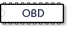
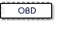

 


On Board Diagnostics (OBD) ICs
Our "OBD Interpreter" ICs are designed for use with vehicles that use the standard OBDII (On Board Diagnostics) protocols. Most modern vehicles use the CAN (ISO15765-4) protocol, but yours may not. If you are unsure of what protocol your vehicle uses, see the 'obd help' page (help > OBD).
Here is information on our OBD products:
Protocol Support
Once you know the protocol that you need to ‘interpret’, the following chart will help you to choose an integrated circuit:
Note that we have also included a couple of non-OBDII protocols that we are often asked about.
OBD Interpreters
ELM320 - OBD (PWM) to RS232 Interpreter (v2.0)

ELM322 - OBD (VPW) to RS232 Interpreter (v2.0)
ELM323 - OBD (ISO) to RS232 Interpreter (v2.0)
ELM325 - J1708 Interpreter (v2.0)
ELM327 OBD to RS232 Interpreters
Version History
We are often asked just what the differences are between the versions, and so provide information on our 'obd help' page, and in the ELM327 data sheet. In addition, we also provide these two files ('ELM327 AT Commands' and 'Programmable Parameters') that summarize some of the programming differences.
Basically, you will find that the:
- Version 1.3a IC is a full-featured device that meets the needs of 90% of all users
- Version 1.4b update adds a reduced power (sleep) mode, and J1939 refinements
- The latest version (2.3) is faster, and has many more features than the other versions
ELM327 – OBD to RS232 Interpreter
- SAE J1850 PWM
- SAE J1850 VPW
- ISO 9141-2
- ISO14230-4
- ISO15765-4
In addition, the IC supports various other protocols to varying degrees (SAE J1939, CAN at programmable rates up to 500kbps, ISO 9141 and ISO 14230 at 9600 and 4800 bps, etc.)
The latest ELM327 is available in two voltage ranges:
ELM327
The most recent version (firmware v2.3) adds new C0/C1, IA and FT commands, has updated Response Pending logic for use with CAN Extended Addressing, and adds new Flow Control modes. This integrated circuit requires a Vdd supply of 4.2V to 5.5V.
ELM327L
The ‘L’ version of the ELM327 supports all of the functions of the ELM327 v2.3, but operates down to a much lower supply voltage (to 2.0V).
It is also available in an SSOP package in addition to the standard SO and PDIP types.
Several customers were reluctant to redesign their proven products so have asked that we continue to stock the following ‘mature’ version of the ELM327:
ELM327 v1.3a
A good basic product that continues to sell well.
ELM327 v1.4b
An improved version of the v1.3a that adds a reduced power (sleep) mode, and J1939 refinements. We mention it here so that we can stress that no version 1.4a was ever made. (We pulled a fast one on the clone makers and skipped over any version 1.4a.) Note also that a v1.5 was never made - we skipped directly to v2.0 after the v1.4b.
The different versions of the ELM327 IC may be a little confusing to some. Perhaps this chart may be of help:
| ELM327 v1.3a | ELM327 v2.3 | ELM327L v2.3 |
|
|---|---|---|---|
| Operating Voltage | 4.5V to 5.5V | 4.2V to 5.5V | 2.0V to 5.5V |
| Low Power (sleep) Mode | – | ✔ | ✔ |
| Settings Retained on Wake | – | ✔ | ✔ |
| RS232 Transmit Buffer Bytes | 256 | 512 | 2048 |
| AT Commands | 100 | 144 | 144 |
| CAN Frequency Check During Auto Protocol Searches | – | ✔ | ✔ |
| Response Pending (7F xx 78) Support | – | ✔ | ✔ |
ELM329 – CAN Interpreter
With vehicles beginning to only support the CAN protocols, we took an ELM327 and removed support for the non-CAN protocols (but still provide enough command support to allow most ELM327 software to work with it). With the extra space, we added functions like CAN single-wire transceiver controls, a ‘protocol active’ led output, etc. Firmware version 2.2 is the most recent revision. This IC requires a Vdd supply of 4.2V to 5.5V.
ELM329L – low voltage version of the ELM329
This integrated circuit supports all of the ELM329 v2.2 functions, but operates with lower voltage supplies (from 2.0V to 5.5V) and also is available in an SSOP pakage.
So why buy an ELM329?
If you are not interested in the older OBDII protocols (SAE J1850, ISO 9141, or ISO 14230), and only want CAN (ISO 11898, ISO 15765, SAE J1939, NMEA 2000, etc.) then the ELM329 may be a better choice for you.
Here are some of the ELM327 – ELM329 differences in chart form:
| ELM327 v2.3 | ELM327L v2.3 | ELM329 v2.2 | ELM329L v2.2 |
|
|---|---|---|---|---|
| Operating Voltage | 4.2V to 5.5V | 2.0V to 5.5V | 4.2V to 5.5V | 2.0V to 5.5V |
| Number of IC Pins | 28 | 28 | 28 | 28 |
| Low Power (sleep) Mode | ✔ | ✔ | ✔ | ✔ |
| Settings Retained on Wake | ✔ | ✔ | ✔ | ✔ |
| RS232 Transmit Buffer Bytes | 512 | 2048 | 512 | 2048 |
| Automatically Formats Long (>8 byte) Messages | No | No | No | No |
| CAN Periodic Messages | – | – | ✔ | ✔ |
| User Definable CAN Protocols | 2 | 2 | 5 | 5 |
| Single Wire CAN Transceiver Controls | – | – | 2 | 2 |
| CAN Frequency Check For Auto Protocol Searches | ✔ | ✔ | ✔ | ✔ |
| Response Pending (7F xx 78) Support | ✔ | ✔ | ✔ | ✔ |
| General Purpose Inputs | – | – | 2 | 2 |
| General Purpose Ouputs | – | – | 1 | 1 |
| Hardware-based CAN Activity Monitor | – | – | ✔ | ✔ |
| Protocol Active Output | – | – | ✔ | ✔ |
There are also several other differences that make the ELM329 the preferred product if you are only dealing with CAN protocols. Please refer to the respective data sheets for more information.
OBD Software Development
ELM328 - OBD Device Identifier Test IC (v1.4)